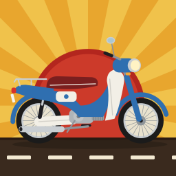
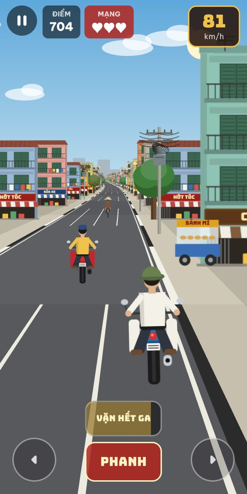
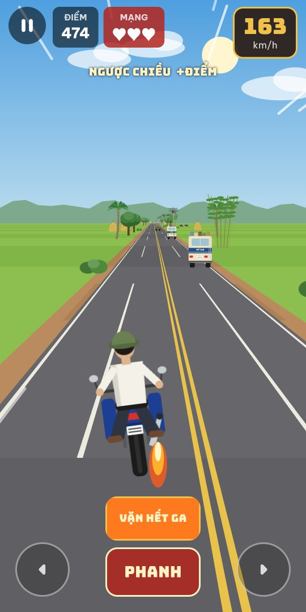
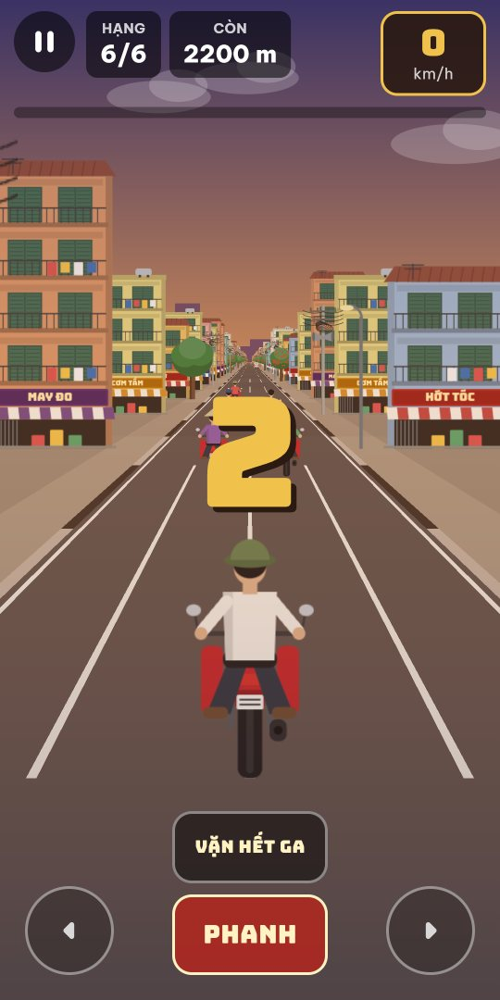
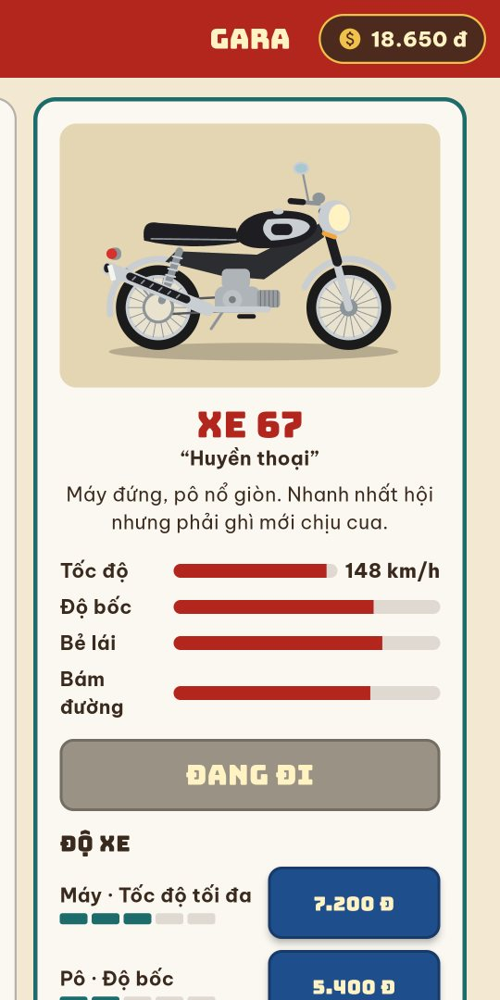
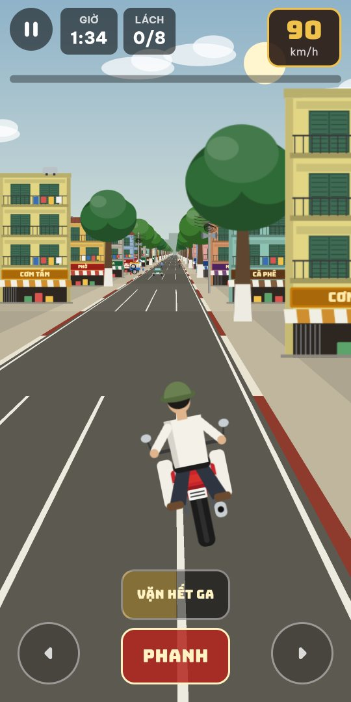
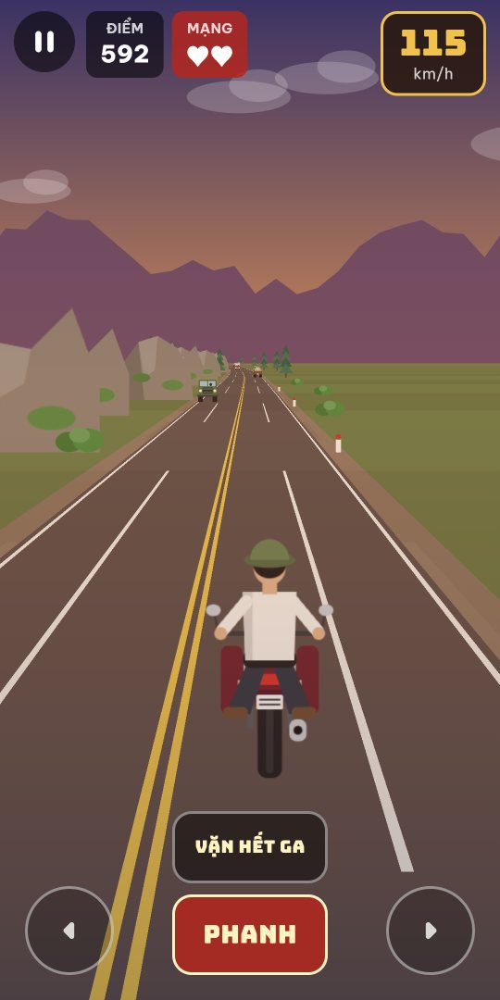
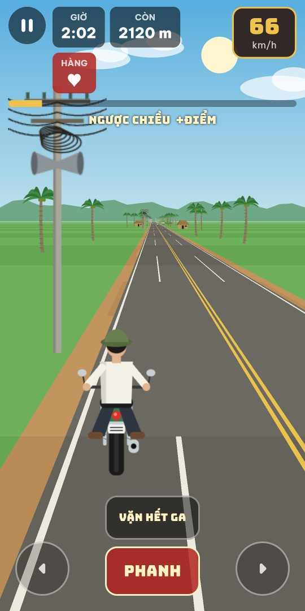
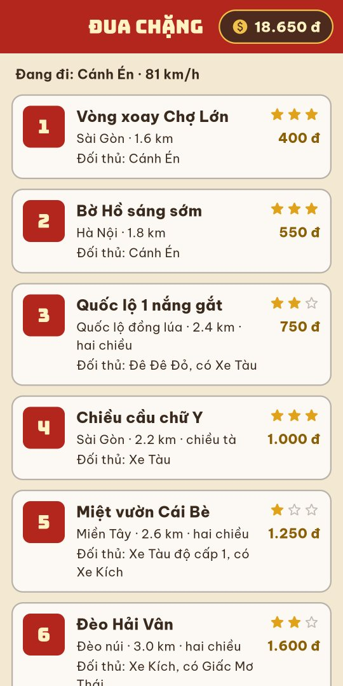

Nổ máy chiếc xe cũ, lách qua xích lô, xe lam, xe đò trên những con đường Việt Nam ngày xưa.

Xe tự lên ga. Giữ nửa trái hoặc nửa phải màn hình để lái, một nút phanh, một nút vặn hết ga. Chơi được bằng một tay.
Ba mạng. Chạy càng xa, lách càng sát thì điểm càng cao. Bật đường hai chiều để lấn làn ăn thêm điểm.
Mười hai chặng với năm tay đua máy, từ Vòng xoay Chợ Lớn tới Xuyên Việt. Vào tốp ba mới mở chặng sau.
Giao báo buổi sáng, chở đá cây, chở heo ra chợ, rước dâu kịp giờ lành. Có món hàng ngã một lần là hỏng.
Dành tiền mua xe mới và độ máy, pô, lốp, tay ga cho từng chiếc.
Mỗi xe một tính nết: chiếc lành dễ lái, chiếc bốc mà hay văng, chiếc nhanh nhất hội nhưng phải ghì mới chịu vào cua.
Phố Sài Gòn với nhà ống và biển hiệu, Hà Nội rợp bóng cây, quốc lộ giữa đồng lúa, đèo núi lúc chiều tà, miền Tây hàng dừa. Tông cây, cột điện hay sạp hàng ven đường là ngã xe.






